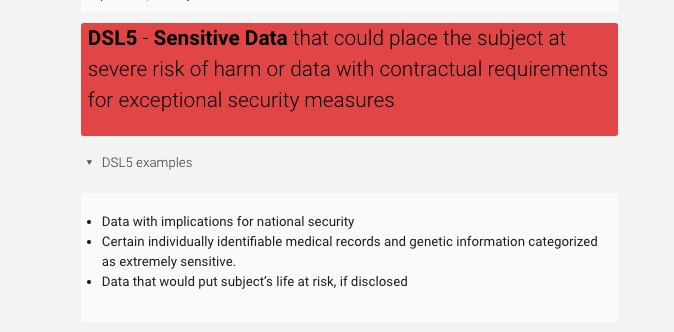

Publishing tips from a data safety expert
In this interview with Megan Potterbusch , the Harvard Kennedy School’s Research Data Steward, you will learn:
- How to balance open science and data safety
- How to get started with support for your research
The interview
BELLE LIPTON: Megan, can you introduce us to your role?
MEGAN POTTERBUSCH: I work within the Kennedy School’s Libraries and Research Services. I’m the primary reviewer for data safety plans. A data safety plan is required for anyone who is working with regulated or contracted data, especially data that is considered sensitive. That means if there is a data use agreement, a licensing agreement, special terms of use, or an IRB, there are paths into the data safety system. It’s unusual for a librarian to serve in this capacity because it usually falls under a School Security Officer or something like that. Here at Harvard Kennedy School, I serve in that role because it’s all about Research Data Management.
LIPTON: I’m interested in the unique nature of the data students are working with at the Kennedy School, which would necessitate this sort of librarian safety person. I know before Harvard your career has focused on helping researchers contribute to open science and scholarship such as educating on reproducibility and long-term preservation, and that you have extensive experience with the Open Science Framework as a tool to support this. Do you see data safety and open access publishing principles in tension with one another, and how do you balance helping researchers with both?
 Definition for the highest level of data sensitivity in Harvard’s Data Security Levels
POTTERBUSCH: I was attending a lecture yesterday about how journals are grappling with this exact question. How can you expect open science and open data knowing that some people who are publishing are working with data that is restricted in some way, and that it can’t be fully open? There’s some motion happening on this issue in clinical trials and genetic data, but in terms of qualitative data or data that comes from businesses or is internal to governments, there’s still no easy answer. You could say “deidentify”, OK. But what do you mean? There are no simple answers here.
To me, by having a data safety process, we’re facilitating open science, the ability to push boundaries and do research we weren’t able to do before by setting up these relationships that ensure that we’re respecting privacy, confidentiality, intellectual property from the data provider. We’re able to move forward with the research. And before, without a mechanism like a data use agreement to facilitate the sharing of that data with special guard rails, we couldn’t do some of the research that we’re now able to do. There would have to be a lot of informal trust established, and by establishing a path for a more formalized trust between institutions, we can actually use that data and do research. It’s exciting to me because it’s facilitating the ability to do research.
How do we then balance that with open science? It becomes about how you’re citing the data, describing effectively the data source, etc. If a future person wanted to do research with a dataset that couldn’t be shared by any means, would they understand how to request the same data? There is not always an easy answer for how to do that. For instance say you’re working with an administrative report generated on a particular day and then maybe staff turnover happened. What do you do? That’s when I like to talk about methods reproducibility instead of results reproducibility. Could someone else follow your methods? Even if you can’t share the data, there are things you can do to have transparency in your research.
LIPTON: What do you think makes the library uniquely positioned to help researchers with this? Why should people chat with us?
POTTERBUSCH: Well, we have a long history of working in this space of providing literacy resources. I hear from faculty members that they’re grateful to be working with me, because I’m in a position to watch the changes and developments that are happening across multiple fields. If you’re looking only in your niche, you might miss breakthroughs and innovations in other fields in the realm of open science.
Another reason for partnering with librarians is we have a long history of organizing information as a profession. Research computing might be able to help you build a database, but what if you need to identify the most appropriate controlled vocabulary? What if you need a specific metadata schema to help make your data accessible? If you’re spinning your wheels about how to find funding for maintaining a website or database after your grant is finished, how are you going to know the stewardship and maintenance support options that may be available to you?
LIPTON: Megan, you’re sitting in the Harvard Kennedy School Library. I’ve been really enjoying working with you and some of your data-adjacent colleagues such as Alessandra Seiter and James Adams on providing joint geospatial learning opportunities to your communities. It’s been awesome nurturing a network of librarians so that we can answer questions robustly. My last question is, if something you’ve said has resonated with someone who is not part of the Kennedy School, what steps do you recommend for that person?
POTTERBUSCH: If people have questions about libraries’ support for open science, privacy and security, they can absolutely reach out to me as a first stop. I can then help link to the right data services for your school or research question.